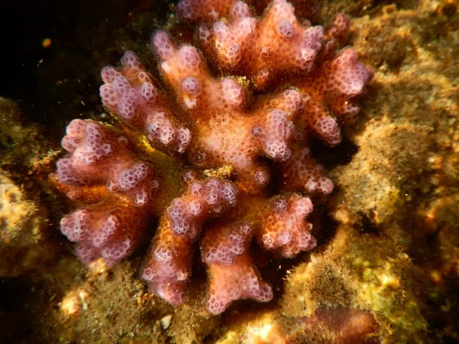

其他无脊椎动物 · 动物界
鹿角杯形珊瑚 Pocillopora damicornis

常见的造礁石珊瑚，群体呈鹿角状分枝，体内有虫黄藻共生，分布于印度—太平洋，是珊瑚礁白化的敏感指示种。
- 分类
- 门刺胞动物门纲珊瑚纲目石珊瑚目科杯形珊瑚科属杯形珊瑚属
- 栖息环境
- 热带珊瑚礁的礁坪与浅水礁坡，光照充足、水流适中
- 地理分布
- 印度洋和太平洋的珊瑚礁区，包括中国南海
- 保护级别
- 暂无评估；珊瑚礁受海水升温和污染威胁
物种志
鹿角杯形珊瑚的群体呈灌木状或鹿角状，分枝细密，表面布满小水螅体，活体多呈粉红、淡黄或褐色。它属于石珊瑚，能分泌碳酸钙骨骼，与虫黄藻共生，靠藻类光合作用提供大部分能量，因此需要充足的光照。
它生活在热带珊瑚礁的浅水区，从礁坪到礁坡都能见到，喜欢光照充足、水流适中的环境。环境压力大时，鹿角杯形珊瑚会把体内的虫黄藻排出，出现白化现象，如果持续时间过长就会死亡。它分布于印度洋和太平洋的珊瑚礁，是研究珊瑚白化和恢复力的常用物种。海水升温、污染和过度捕捞都会威胁珊瑚礁健康，保护珊瑚礁需要减少碳排放并控制局部污染，珊瑚礁保护区的建立也有助于它的恢复。
形态与习性
- 食性靠体内虫黄藻光合作用供能，也捕食浮游生物
- 形态群体呈鹿角状或灌木状分枝
- 骨骼分泌碳酸钙骨骼，是造礁珊瑚
- 白化环境压力下排出虫黄藻，出现白化
- 分布印度洋和太平洋珊瑚礁
- 生态作用造礁和为珊瑚礁生物提供栖息地
趣味知识
- 鹿角杯形珊瑚的枝状群体，是许多小鱼躲避天敌的地方。
- 海水持续升温时，它会排出体内的虫黄藻而白化。
- 它生长快，是造礁珊瑚中恢复能力较强的种类之一。